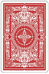

Topic 21: Object-Oriented Programming#
onl01-dtsc-ft-022221
04/27/21
Topics#
Review Defining Functions
Defining/Initializing Classes
Inspecting classes:
help(obj)vsdir(obj)
Deeper dive into Classes/Objects
special methods/properties (
__repr__(),__str__(),__gt__(),__lt__(),__getitem__())
Extended Activity: Building a Deck of PlayingCards
Questions?#
What does it mean to be ‘Object-Oriented’?#
“Everything is an object.”#
some Python sensei
Any function, method, class, variable are ALL objects.
Built from a template Class
Can be stored in memory under any name
## Any function can be assigned to a new variable and will behave the same way
prove_it = print
prove_it
<function print>
prove_it("This is now equal to print.")
This is now equal to print.
help(prove_it)
Help on built-in function print in module builtins:
print(...)
print(value, ..., sep=' ', end='\n', file=sys.stdout, flush=False)
Prints the values to a stream, or to sys.stdout by default.
Optional keyword arguments:
file: a file-like object (stream); defaults to the current sys.stdout.
sep: string inserted between values, default a space.
end: string appended after the last value, default a newline.
flush: whether to forcibly flush the stream.
prove_it.__name__
'print'
Defining Functions#
Function: A resuable, fleixbile block of code that runs a process
Parameters: inputs that are expected by python/that function
Argument: the actual value/variable passed into the function.
Positional Argument:
Keyword/default Arguments:
“Calling” a function:
( )
def my_func(posarg1,
posarg2, kwarg1='example',kwarg2='example2'):
print('positional arguments:')
print(f" {posarg1}, {posarg2}")
print("keyword arguments:")
print(f" kwarg1={kwarg1}")
print(f" kwarg2={kwarg2}")
## What does my_func look like?
my_func
<function __main__.my_func(posarg1, posarg2, kwarg1='example', kwarg2='example2')>
## Run my_func with posarg1=1,posarg2=2
my_func(1,2)
positional arguments:
1, 2
keyword arguments:
kwarg1=example
kwarg2=example2
## Change kwarg1 to something else
my_func(1,2,kwarg1='something else')
positional arguments:
1, 2
keyword arguments:
kwarg1=something else
kwarg2=example2
my_func(1,2,'something else')
positional arguments:
1, 2
keyword arguments:
kwarg1=something else
kwarg2=example2
my_func(1, kwarg1='something')
---------------------------------------------------------------------------
TypeError Traceback (most recent call last)
<ipython-input-12-4563a411c412> in <module>
----> 1 my_func(1, kwarg1='something')
TypeError: my_func() missing 1 required positional argument: 'posarg2'
Defining and Initializing Classes#
Use
class NewClassName():like you usedef function_name():for functions.the
()are optional for classes. (used to inherit other classes, more on that later)
Naming Classes#
Convention for naming classes =
UpperCamelCaseConvention for naming function =
snake_case
## Bare minimum to define a class.
class PlayingCard:
pass
Attributes and Methods#
Attribute: a variable is stored inside a class/object
Method: a function that is stored inside of and (usually) operates on the object/class
What makes a PlayingCard?#
Card:
Value / Name:
2, 3, 4, 5, 6, 7, 8, 9, 10, J, Q, K, A
Suit:
Hearts (H), Spades(S), Clubs(C), Diamonds(D)
Color:
black or red
## Make a new PlayingCard class with a value of 2 and a suit of spades, and color=black
class PlayingCard:
value = 2
suit = "S"
color = 'black'
## Make an instance of a PlayingCard and display it
card = PlayingCard()
card
<__main__.PlayingCard at 0x7f82a91f1c10>
## Print out the vard's value and suit in one statement
print(f"{card.value} of {card.suit}")
2 of S
Improving our class: let’s add a
.flip()method that will print the value and suit.
## Copy previous version of class and add the .flip method.
class PlayingCard:
value = 2
suit = "S"
color = 'black'
def flip():
print(f"{card.value} of {card.suit}")
## Make an instance of a PlayingCard and display it
card = PlayingCard()
card.flip()
---------------------------------------------------------------------------
TypeError Traceback (most recent call last)
<ipython-input-23-0c8b9f7f6bd2> in <module>
1 ## Make an instance of a PlayingCard and display it
2 card = PlayingCard()
----> 3 card.flip()
TypeError: flip() takes 0 positional arguments but 1 was given
Ruh roh! What happened?! What does the error message mean?
Know thy self#
Because Methods are designed to operate on the
object_its.attached_to(), Python automatically gives every method a copy of instance its attached to, which we callselfWe have to pass
selfas the first parameter for every method we make.Otherwise it will think that the first thing we give it is actually itself. This will cause an existential crisis* and corresponding error.
## Update our class by adding self where its needed.
class PlayingCard:
value = 2
suit = "S"
color = 'black'
def flip(self):
print(f"{self.value} of {self.suit}")
## Make an instance of a PlayingCard and display it
card = PlayingCard()
card.flip()
2 of S
Initialization#
As we have seen, we create an instance by setting a
instance = ClassName()This uses the template
ClassNameto create an instance of the class ( which we namedinstance).
How do we change our PlayingCard class so that we can make other cards besides the 2 of spades?
__init__#
When an instance is
initialized, wecallit using(), which runs a default__init__()method.
## Update our class by adding an __init__ that controls value, suit, color
class PlayingCard:
def __init__(self, value, suit):
"""Creates a playing card instance with the specified value and suit
Value should be 2-10, or J,Q,K,A
Suit should be 'H','D','C','S'
"""
self.value = value
self.suit = suit
self.color = 'black' if suit in ['S','C'] else 'red'
def flip(self):
print(f"{self.value} of {self.suit}")
## test out our updated playing card class by making card1 = a 'J of Hearts'
card1 = PlayingCard('J','H')
card1.flip()
J of H
card1.color
'red'
## test out our updated playing card class by making a card2 a 7 of Spades
card2 = PlayingCard(7,'S')
card2.flip()
card2.color
7 of S
'black'
is card 1 greater than card 2?#
card1 > card2
---------------------------------------------------------------------------
TypeError Traceback (most recent call last)
<ipython-input-34-9f3801cab5e7> in <module>
----> 1 card1 > card2
TypeError: '>' not supported between instances of 'PlayingCard' and 'PlayingCard'
Special Class Methods#
Special Methods#
It is common for a class to have magic methods. These are identifiable by the “dunder” (i.e. double underscore) prefixes and suffixes, such as __init__(). These methods will get called automatically, as we’ll see below.
For more on these “magic methods”, see here.
Using Special Methods to evaluate comparisons#
__gt__ & __lt__:#
## Add a __gt__ and __lt__ method to compare self to other
class PlayingCard:
def __init__(self, value, suit):
"""Creates a playing card instance with the specified value and suit
Value should be 2-10, or J,Q,K,A
Suit should be 'H','D','C','S'
"""
self.value = value
self.suit = suit
self.color = 'black' if suit in ['S','C'] else 'red'
def flip(self):
print(f"{self.value} of {self.suit}")
def __gt__(self,other):
return self.value > other.value
def __lt__(self,other):
return self.value < other.value
## Remake card 1 and card2 and test if card1>card2
card1 = PlayingCard('J','H')
card1.flip()
card2 = PlayingCard(7,'S')
card2.flip()
card1>card2
J of H
7 of S
---------------------------------------------------------------------------
TypeError Traceback (most recent call last)
<ipython-input-47-bd54fc6d35d3> in <module>
5 card2 = PlayingCard(7,'S')
6 card2.flip()
----> 7 card1>card2
<ipython-input-43-b4bcfbf61505> in __gt__(self, other)
16
17 def __gt__(self,other):
---> 18 return self.value > other.value
19
20 def __lt__(self,other):
TypeError: '>' not supported between instances of 'str' and 'int'
Ruh Roh! We can’t compare a str and an int! Let’s fix this with out
__init__
Adding our card’s value#
Create a string-based
namefor the cardUpdate
.flip()to usenameinstead ofvalue
Save the numeric
valueof the card for comparison
## Value dictionary for lookup
value_dct = {
'2': 2,'3': 3, '4': 4, '5': 5, '6': 6,
'7': 7, '8': 8, '9': 9, '10': 10,
'J': 11,'Q': 12, 'K': 13, 'A': 14
}
value_dct
{'2': 2,
'3': 3,
'4': 4,
'5': 5,
'6': 6,
'7': 7,
'8': 8,
'9': 9,
'10': 10,
'J': 11,
'Q': 12,
'K': 13,
'A': 14}
## Create a string-based name for the card
# save the numeric value of the card for comparison
class PlayingCard:
def __init__(self, name, suit):
"""Creates a playing card instance with the specified value and suit
Value should be 2-10, or J,Q,K,A
Suit should be 'H','D','C','S'
"""
value_dct = {
'2': 2,'3': 3, '4': 4, '5': 5, '6': 6,
'7': 7, '8': 8, '9': 9, '10': 10,
'J': 11,'Q': 12, 'K': 13, 'A': 14
}
self.name = str(name)
self.value = value_dct[self.name]
self.suit = suit
self.color = 'black' if suit in ['S','C'] else 'red'
def flip(self):
print(f"{self.value} of {self.suit}")
def __gt__(self,other):
return self.value > other.value
def __lt__(self,other):
return self.value < other.value
def __eq__(self,other):
return self.value == other.value
# card1 > card2
## Run this cell to test our value comparison from before
card1 = PlayingCard('J','H')
card1.flip()
card2 = PlayingCard(7,'S')
card2.flip()
card1>card2
11 of H
7 of S
True
card1.__gt__
<method-wrapper '__gt__' of PlayingCard object at 0x7f82a91f1580>
card1>card2
True
card1==card2
False
## What about card1<card2?
card1<card2
False
Success! This is great and all, but the PlayingCard isn’t terribly fun-looking
## Display card1
card1
<__main__.PlayingCard at 0x7f82a9266790>
Using special methods to control the output of a class#
## Display card 1
card1 = PlayingCard('J','H')
print(card1)
card1
<__main__.PlayingCard object at 0x7f82a95b7070>
<__main__.PlayingCard at 0x7f82a95b7070>
__repr__() & __str__()#
Whenever an object is displayed, it runs the object’s
__repr__()method.Whenever an object is printed, it runs the
__str__()method.They are both designed to return string-representations of the object.
But
__repr__()focuses on minimizing ambiguity while__str__()focuses on readability.
However, if your class has no
__str__()method, it will fall back on__repr__()(if it exists!).For more on this distinction, see this post.
Add a __repr__ and __str__ method to our PlayingCard#
have
__repr__return ‘An Instance of a PlayingCard’have
__str__return “A Playing Card”
### add a __repr__() method that returns "A Playing Card"
class PlayingCard:
def __init__(self, name, suit):
"""Creates a playing card instance with the specified value and suit
Value should be 2-10, or J,Q,K,A
Suit should be 'H','D','C','S'
"""
value_dct = {
'2': 2,'3': 3, '4': 4, '5': 5, '6': 6,
'7': 7, '8': 8, '9': 9, '10': 10,
'J': 11,'Q': 12, 'K': 13, 'A': 14
}
self.name = str(name)
self.value = value_dct[self.name]
self.suit = suit
self.color = 'black' if suit in ['S','C'] else 'red'
def flip(self):
print(f"{self.value} of {self.suit}")
def __gt__(self,other):
return self.value > other.value
def __lt__(self,other):
return self.value < other.value
def __eq__(self,other):
return self.value == other.value
def __repr__(self):
return 'An Instance of a PlayingCard'
# def __str__(self):
# return 'A PlayingCard'
## Test out our __repr__ & __str__
card1 = PlayingCard('J','H')
print(card1)
card1
An Instance of a PlayingCard
An Instance of a PlayingCard
Making Things More Interesting#
Instead of our text-based
__repr__and__str__, let’s be sneaky and use an image of card back for our__repr__.

from PIL import Image
img = Image.open("card_back.png")
img.resize((100,150))

Add a
backattribute that stores the image of the card.
Replace our
__repr__with display the imageGo ahead and delete our
__str__since we want it to behave the same as__repr__anyway
### add a .back containing the stored image of the card.
class PlayingCard:
def __init__(self, name, suit):
"""Creates a playing card instance with the specified value and suit
Value should be 2-10, or J,Q,K,A
Suit should be 'H','D','C','S'
"""
value_dct = {
'2': 2,'3': 3, '4': 4, '5': 5, '6': 6,
'7': 7, '8': 8, '9': 9, '10': 10,
'J': 11,'Q': 12, 'K': 13, 'A': 14
}
self.name = str(name)
self.value = value_dct[self.name]
self.suit = suit
self.color = 'black' if suit in ['S','C'] else 'red'
self.back = Image.open("card_back.png").resize((100,150))
def flip(self):
print(f"{self.name} of {self.suit}")
def __gt__(self,other):
return self.value > other.value
def __lt__(self,other):
return self.value < other.value
def __eq__(self,other):
return self.value == other.value
def __repr__(self):
display(self.back)
return ''#An Instance of a PlayingCard'
# def __str__(self):
# return 'A PlayingCard'
## Test out our __repr__
card1 = PlayingCard('J','H')
print(card1)
card1
## Flip for sanity check
card1.flip()
J of H
Success!
Making our class even MORE fun#
Our
.flip()method is kind of boring compared to our__repr__If only we had some way of using symbols in our text instead of just boring old font…. 🤔
symbols = {'S':'♠️','C':'♣️','D':'♦️','H':'♥️'}
symbols
{'S': '♠️', 'C': '♣️', 'D': '♦️', 'H': '♥️'}
Use these emoji symbols plus the provided make_ascii_card to overhaul our class’s .flip()#
def make_ascii_card(name, suit):
"""Ascii Card adapted from: https://codereview.stackexchange.com/questions/82103/ascii-fication-of-playing-cards
"""
symbols = {'S':'♠️','C':'♣️',
'D':'♦️','H':'♥️'}
suit_symbol = symbols[suit]
if name == '10':
space=''
else:
space = ' '
# add the individual card on a line by line basis
_ascii=[]
_ascii.append('┌─────────┐')
_ascii.append(f'│{name}{space} │')#.format(rank, space)) # use two {} one for char, one for space or char
_ascii.append('│ │')
_ascii.append('│ │')
_ascii.append(f'│ {suit_symbol} │') #.format(suit))
_ascii.append('│ │')
_ascii.append('│ │')
_ascii.append(f'│ {space}{name}│')#.format(space, rank))
_ascii.append('└─────────┘')
return '\n'.join(_ascii)
## test our make_ascii_card by making an Ace of Diamonds
print(make_ascii_card('J','H'))
┌─────────┐
│J │
│ │
│ │
│ ♥️ │
│ │
│ │
│ J│
└─────────┘
Add a .face containing the stored ascii version of the card.
Change
.flip()to use the new face.
### add a .face containing the stored ascii version of the card.
class PlayingCard:
def __init__(self, name, suit):
"""Creates a playing card instance with the specified value and suit
Value should be 2-10, or J,Q,K,A
Suit should be 'H','D','C','S'
"""
value_dct = {
'2': 2,'3': 3, '4': 4, '5': 5, '6': 6,
'7': 7, '8': 8, '9': 9, '10': 10,
'J': 11,'Q': 12, 'K': 13, 'A': 14
}
self.name = str(name)
self.value = value_dct[self.name]
self.suit = suit
self.color = 'black' if suit in ['S','C'] else 'red'
self.back = Image.open("card_back.png").resize((100,150))
self.face = make_ascii_card(self.name, self.suit)
def flip(self):
print(self.face)
# print(f"{self.name} of {self.suit}")
def __gt__(self,other):
return self.value > other.value
def __lt__(self,other):
return self.value < other.value
def __eq__(self,other):
return self.value == other.value
def __repr__(self):
display(self.back)
return ''#An Instance of a PlayingCard'
# def __str__(self):
# return 'A PlayingCard'
## Run this cell to test our value comparison from before
card1 = PlayingCard('J','H')
card1.flip()
card2 = PlayingCard(7,'S')
card2.flip()
card1>card2
┌─────────┐
│J │
│ │
│ │
│ ♥️ │
│ │
│ │
│ J│
└─────────┘
┌─────────┐
│7 │
│ │
│ │
│ ♠️ │
│ │
│ │
│ 7│
└─────────┘
True
Yay!!! We are HUGE nerds but yay!!!!
NEXT: two options#
Option 1: Make a
DeckofPlayingCardsto explore some additional special methods.Option 2: Discuss Inheritance and make our own OneHotEncoder that is more convient than the default
Option 1: Make a Deck to Explore some additional special methods.#
Overview - Whats in a Deck?#
A Deck
“a collection of Cards”
Contains all standard 52 cards in a
.cardsattribute.
Has a
.shuffle()method.Returns the number of cards in the deck as the
__repr__Has a
__getitem__method to make the deck subscriptable
cards_to_make = list(range(2,11))
cards_to_make.extend(['J','Q','K','A'])
cards_to_make
[2, 3, 4, 5, 6, 7, 8, 9, 10, 'J', 'Q', 'K', 'A']
suits_to_make = ['S','C','H','D']
import numpy as np
class Deck:
def __init__(self):
self.cards = []
cards_to_make = list(range(2,11))
cards_to_make.extend(['J','Q','K','A'])
suits_to_make = ['S','C','H','D']
for suit in suits_to_make:
for value in cards_to_make:
self.cards.append( PlayingCard(value,suit))
def shuffle(self):
np.random.shuffle(self.cards)
def __repr__(self):
return f"There are {len(self.cards)} cards in the deck."
def __getitem__(self,index):
return self.cards[index]
## Test out the Deck class by running the next cells
deck = Deck()
deck
There are 52 cards in the deck.
## Slice out the first .cards
deck.cards[0].flip()
┌─────────┐
│2 │
│ │
│ │
│ ♠️ │
│ │
│ │
│ 2│
└─────────┘
## Slice first card directly and flip
deck[0].flip()
┌─────────┐
│2 │
│ │
│ │
│ ♠️ │
│ │
│ │
│ 2│
└─────────┘
## shuffle and flip the first card again
deck.shuffle()
deck[0].flip()
┌─────────┐
│4 │
│ │
│ │
│ ♥️ │
│ │
│ │
│ 4│
└─────────┘
Option 2: Use inheritance to make our own OneHotEncoder#
Inheritance#
We can inherit all of the properties of another class when we write a new one to save ourselves time and effort.
## Getting the dataset ready (don't worry about this code for now)
from fsds.imports import *
df= fs.datasets.load_iowa_prisoners()
df.fillna('MISSING',inplace=True)
df.head()
fsds v0.3.2 loaded. Read the docs: https://fs-ds.readthedocs.io/en/latest/
| Handle | Package | Description |
|---|---|---|
| dp | IPython.display | Display modules with helpful display and clearing commands. |
| fs | fsds | Custom data science bootcamp student package |
| mpl | matplotlib | Matplotlib's base OOP module with formatting artists |
| plt | matplotlib.pyplot | Matplotlib's matlab-like plotting module |
| np | numpy | scientific computing with Python |
| pd | pandas | High performance data structures and tools |
| sns | seaborn | High-level data visualization library based on matplotlib |
| Fiscal Year Released | Recidivism Reporting Year | Race - Ethnicity | Age At Release | Convicting Offense Classification | Convicting Offense Type | Convicting Offense Subtype | Release Type | Main Supervising District | Recidivism - Return to Prison | Days to Recidivism | New Conviction Offense Classification | New Conviction Offense Type | New Conviction Offense Sub Type | Part of Target Population | Recidivism Type | Sex | |
|---|---|---|---|---|---|---|---|---|---|---|---|---|---|---|---|---|---|
| 0 | 2010 | 2013 | Black - Non-Hispanic | 25-34 | C Felony | Violent | Robbery | Parole | 7JD | Yes | 433 | C Felony | Drug | Trafficking | Yes | New | Male |
| 1 | 2010 | 2013 | White - Non-Hispanic | 25-34 | D Felony | Property | Theft | Discharged – End of Sentence | MISSING | Yes | 453 | MISSING | MISSING | MISSING | No | Tech | Male |
| 2 | 2010 | 2013 | White - Non-Hispanic | 35-44 | B Felony | Drug | Trafficking | Parole | 5JD | Yes | 832 | MISSING | MISSING | MISSING | Yes | Tech | Male |
| 3 | 2010 | 2013 | White - Non-Hispanic | 25-34 | B Felony | Other | Other Criminal | Parole | 6JD | No | MISSING | MISSING | MISSING | MISSING | Yes | No Recidivism | Male |
| 4 | 2010 | 2013 | Black - Non-Hispanic | 35-44 | D Felony | Violent | Assault | Discharged – End of Sentence | MISSING | Yes | 116 | MISSING | MISSING | MISSING | No | Tech | Male |
## let's encode "ReleaseType" using onehotencoder
from sklearn.preprocessing import OneHotEncoder
cols_to_encode = ['Release Type']
encoder = OneHotEncoder(sparse=False)
encoder.fit(df[cols_to_encode])
OneHotEncoder(sparse=False)
data_ohe = encoder.transform(df[cols_to_encode])
data_ohe
array([[0., 0., 0., ..., 0., 0., 0.],
[0., 1., 0., ..., 0., 0., 0.],
[0., 0., 0., ..., 0., 0., 0.],
...,
[0., 0., 0., ..., 0., 0., 0.],
[0., 0., 0., ..., 1., 0., 0.],
[0., 0., 0., ..., 0., 0., 0.]])
encoder.get_feature_names(cols_to_encode)
array(['Release Type_Discharged - Expiration of Sentence',
'Release Type_Discharged – End of Sentence',
'Release Type_Interstate Compact Parole', 'Release Type_MISSING',
'Release Type_Parole', 'Release Type_Parole Granted',
'Release Type_Paroled to Detainer - INS',
'Release Type_Paroled to Detainer - Iowa',
'Release Type_Paroled to Detainer - Out of State',
'Release Type_Paroled to Detainer - U.S. Marshall',
'Release Type_Paroled w/Immediate Discharge',
'Release Type_Released to Special Sentence',
'Release Type_Special Sentence'], dtype=object)
## Turn data_ohe into a dataframe:
df_ohe = pd.DataFrame(data_ohe, columns=encoder.get_feature_names(cols_to_encode))
df_ohe
| Release Type_Discharged - Expiration of Sentence | Release Type_Discharged – End of Sentence | Release Type_Interstate Compact Parole | Release Type_MISSING | Release Type_Parole | Release Type_Parole Granted | Release Type_Paroled to Detainer - INS | Release Type_Paroled to Detainer - Iowa | Release Type_Paroled to Detainer - Out of State | Release Type_Paroled to Detainer - U.S. Marshall | Release Type_Paroled w/Immediate Discharge | Release Type_Released to Special Sentence | Release Type_Special Sentence | |
|---|---|---|---|---|---|---|---|---|---|---|---|---|---|
| 0 | 0.0 | 0.0 | 0.0 | 0.0 | 1.0 | 0.0 | 0.0 | 0.0 | 0.0 | 0.0 | 0.0 | 0.0 | 0.0 |
| 1 | 0.0 | 1.0 | 0.0 | 0.0 | 0.0 | 0.0 | 0.0 | 0.0 | 0.0 | 0.0 | 0.0 | 0.0 | 0.0 |
| 2 | 0.0 | 0.0 | 0.0 | 0.0 | 1.0 | 0.0 | 0.0 | 0.0 | 0.0 | 0.0 | 0.0 | 0.0 | 0.0 |
| 3 | 0.0 | 0.0 | 0.0 | 0.0 | 1.0 | 0.0 | 0.0 | 0.0 | 0.0 | 0.0 | 0.0 | 0.0 | 0.0 |
| 4 | 0.0 | 1.0 | 0.0 | 0.0 | 0.0 | 0.0 | 0.0 | 0.0 | 0.0 | 0.0 | 0.0 | 0.0 | 0.0 |
| ... | ... | ... | ... | ... | ... | ... | ... | ... | ... | ... | ... | ... | ... |
| 26015 | 0.0 | 0.0 | 0.0 | 0.0 | 0.0 | 0.0 | 1.0 | 0.0 | 0.0 | 0.0 | 0.0 | 0.0 | 0.0 |
| 26016 | 0.0 | 0.0 | 0.0 | 0.0 | 0.0 | 0.0 | 0.0 | 0.0 | 0.0 | 0.0 | 0.0 | 1.0 | 0.0 |
| 26017 | 0.0 | 0.0 | 0.0 | 0.0 | 0.0 | 1.0 | 0.0 | 0.0 | 0.0 | 0.0 | 0.0 | 0.0 | 0.0 |
| 26018 | 0.0 | 0.0 | 0.0 | 0.0 | 0.0 | 0.0 | 0.0 | 0.0 | 0.0 | 0.0 | 1.0 | 0.0 | 0.0 |
| 26019 | 0.0 | 0.0 | 0.0 | 0.0 | 0.0 | 0.0 | 0.0 | 0.0 | 1.0 | 0.0 | 0.0 | 0.0 | 0.0 |
26020 rows × 13 columns
Make our own Encoder and inherit everything from OneHotEncoder#
## Make OurOneHotEncoder
class OurOneHotEncoder(OneHotEncoder):
pass
## whats inside our class??
help(OurOneHotEncoder)
Help on class OurOneHotEncoder in module __main__:
class OurOneHotEncoder(sklearn.preprocessing._encoders.OneHotEncoder)
| OurOneHotEncoder(*, categories='auto', drop=None, sparse=True, dtype=<class 'numpy.float64'>, handle_unknown='error')
|
| Encode categorical features as a one-hot numeric array.
|
| The input to this transformer should be an array-like of integers or
| strings, denoting the values taken on by categorical (discrete) features.
| The features are encoded using a one-hot (aka 'one-of-K' or 'dummy')
| encoding scheme. This creates a binary column for each category and
| returns a sparse matrix or dense array (depending on the ``sparse``
| parameter)
|
| By default, the encoder derives the categories based on the unique values
| in each feature. Alternatively, you can also specify the `categories`
| manually.
|
| This encoding is needed for feeding categorical data to many scikit-learn
| estimators, notably linear models and SVMs with the standard kernels.
|
| Note: a one-hot encoding of y labels should use a LabelBinarizer
| instead.
|
| Read more in the :ref:`User Guide <preprocessing_categorical_features>`.
|
| .. versionchanged:: 0.20
|
| Parameters
| ----------
| categories : 'auto' or a list of array-like, default='auto'
| Categories (unique values) per feature:
|
| - 'auto' : Determine categories automatically from the training data.
| - list : ``categories[i]`` holds the categories expected in the ith
| column. The passed categories should not mix strings and numeric
| values within a single feature, and should be sorted in case of
| numeric values.
|
| The used categories can be found in the ``categories_`` attribute.
|
| .. versionadded:: 0.20
|
| drop : {'first', 'if_binary'} or a array-like of shape (n_features,), default=None
| Specifies a methodology to use to drop one of the categories per
| feature. This is useful in situations where perfectly collinear
| features cause problems, such as when feeding the resulting data
| into a neural network or an unregularized regression.
|
| However, dropping one category breaks the symmetry of the original
| representation and can therefore induce a bias in downstream models,
| for instance for penalized linear classification or regression models.
|
| - None : retain all features (the default).
| - 'first' : drop the first category in each feature. If only one
| category is present, the feature will be dropped entirely.
| - 'if_binary' : drop the first category in each feature with two
| categories. Features with 1 or more than 2 categories are
| left intact.
| - array : ``drop[i]`` is the category in feature ``X[:, i]`` that
| should be dropped.
|
| sparse : bool, default=True
| Will return sparse matrix if set True else will return an array.
|
| dtype : number type, default=np.float
| Desired dtype of output.
|
| handle_unknown : {'error', 'ignore'}, default='error'
| Whether to raise an error or ignore if an unknown categorical feature
| is present during transform (default is to raise). When this parameter
| is set to 'ignore' and an unknown category is encountered during
| transform, the resulting one-hot encoded columns for this feature
| will be all zeros. In the inverse transform, an unknown category
| will be denoted as None.
|
| Attributes
| ----------
| categories_ : list of arrays
| The categories of each feature determined during fitting
| (in order of the features in X and corresponding with the output
| of ``transform``). This includes the category specified in ``drop``
| (if any).
|
| drop_idx_ : array of shape (n_features,)
| - ``drop_idx_[i]`` is the index in ``categories_[i]`` of the category
| to be dropped for each feature.
| - ``drop_idx_[i] = None`` if no category is to be dropped from the
| feature with index ``i``, e.g. when `drop='if_binary'` and the
| feature isn't binary.
| - ``drop_idx_ = None`` if all the transformed features will be
| retained.
|
| See Also
| --------
| sklearn.preprocessing.OrdinalEncoder : Performs an ordinal (integer)
| encoding of the categorical features.
| sklearn.feature_extraction.DictVectorizer : Performs a one-hot encoding of
| dictionary items (also handles string-valued features).
| sklearn.feature_extraction.FeatureHasher : Performs an approximate one-hot
| encoding of dictionary items or strings.
| sklearn.preprocessing.LabelBinarizer : Binarizes labels in a one-vs-all
| fashion.
| sklearn.preprocessing.MultiLabelBinarizer : Transforms between iterable of
| iterables and a multilabel format, e.g. a (samples x classes) binary
| matrix indicating the presence of a class label.
|
| Examples
| --------
| Given a dataset with two features, we let the encoder find the unique
| values per feature and transform the data to a binary one-hot encoding.
|
| >>> from sklearn.preprocessing import OneHotEncoder
|
| One can discard categories not seen during `fit`:
|
| >>> enc = OneHotEncoder(handle_unknown='ignore')
| >>> X = [['Male', 1], ['Female', 3], ['Female', 2]]
| >>> enc.fit(X)
| OneHotEncoder(handle_unknown='ignore')
| >>> enc.categories_
| [array(['Female', 'Male'], dtype=object), array([1, 2, 3], dtype=object)]
| >>> enc.transform([['Female', 1], ['Male', 4]]).toarray()
| array([[1., 0., 1., 0., 0.],
| [0., 1., 0., 0., 0.]])
| >>> enc.inverse_transform([[0, 1, 1, 0, 0], [0, 0, 0, 1, 0]])
| array([['Male', 1],
| [None, 2]], dtype=object)
| >>> enc.get_feature_names(['gender', 'group'])
| array(['gender_Female', 'gender_Male', 'group_1', 'group_2', 'group_3'],
| dtype=object)
|
| One can always drop the first column for each feature:
|
| >>> drop_enc = OneHotEncoder(drop='first').fit(X)
| >>> drop_enc.categories_
| [array(['Female', 'Male'], dtype=object), array([1, 2, 3], dtype=object)]
| >>> drop_enc.transform([['Female', 1], ['Male', 2]]).toarray()
| array([[0., 0., 0.],
| [1., 1., 0.]])
|
| Or drop a column for feature only having 2 categories:
|
| >>> drop_binary_enc = OneHotEncoder(drop='if_binary').fit(X)
| >>> drop_binary_enc.transform([['Female', 1], ['Male', 2]]).toarray()
| array([[0., 1., 0., 0.],
| [1., 0., 1., 0.]])
|
| Method resolution order:
| OurOneHotEncoder
| sklearn.preprocessing._encoders.OneHotEncoder
| sklearn.preprocessing._encoders._BaseEncoder
| sklearn.base.TransformerMixin
| sklearn.base.BaseEstimator
| builtins.object
|
| Methods inherited from sklearn.preprocessing._encoders.OneHotEncoder:
|
| __init__(self, *, categories='auto', drop=None, sparse=True, dtype=<class 'numpy.float64'>, handle_unknown='error')
| Initialize self. See help(type(self)) for accurate signature.
|
| fit(self, X, y=None)
| Fit OneHotEncoder to X.
|
| Parameters
| ----------
| X : array-like, shape [n_samples, n_features]
| The data to determine the categories of each feature.
|
| y : None
| Ignored. This parameter exists only for compatibility with
| :class:`sklearn.pipeline.Pipeline`.
|
| Returns
| -------
| self
|
| fit_transform(self, X, y=None)
| Fit OneHotEncoder to X, then transform X.
|
| Equivalent to fit(X).transform(X) but more convenient.
|
| Parameters
| ----------
| X : array-like, shape [n_samples, n_features]
| The data to encode.
|
| y : None
| Ignored. This parameter exists only for compatibility with
| :class:`sklearn.pipeline.Pipeline`.
|
| Returns
| -------
| X_out : sparse matrix if sparse=True else a 2-d array
| Transformed input.
|
| get_feature_names(self, input_features=None)
| Return feature names for output features.
|
| Parameters
| ----------
| input_features : list of str of shape (n_features,)
| String names for input features if available. By default,
| "x0", "x1", ... "xn_features" is used.
|
| Returns
| -------
| output_feature_names : ndarray of shape (n_output_features,)
| Array of feature names.
|
| inverse_transform(self, X)
| Convert the data back to the original representation.
|
| In case unknown categories are encountered (all zeros in the
| one-hot encoding), ``None`` is used to represent this category.
|
| Parameters
| ----------
| X : array-like or sparse matrix, shape [n_samples, n_encoded_features]
| The transformed data.
|
| Returns
| -------
| X_tr : array-like, shape [n_samples, n_features]
| Inverse transformed array.
|
| transform(self, X)
| Transform X using one-hot encoding.
|
| Parameters
| ----------
| X : array-like, shape [n_samples, n_features]
| The data to encode.
|
| Returns
| -------
| X_out : sparse matrix if sparse=True else a 2-d array
| Transformed input.
|
| ----------------------------------------------------------------------
| Data descriptors inherited from sklearn.base.TransformerMixin:
|
| __dict__
| dictionary for instance variables (if defined)
|
| __weakref__
| list of weak references to the object (if defined)
|
| ----------------------------------------------------------------------
| Methods inherited from sklearn.base.BaseEstimator:
|
| __getstate__(self)
|
| __repr__(self, N_CHAR_MAX=700)
| Return repr(self).
|
| __setstate__(self, state)
|
| get_params(self, deep=True)
| Get parameters for this estimator.
|
| Parameters
| ----------
| deep : bool, default=True
| If True, will return the parameters for this estimator and
| contained subobjects that are estimators.
|
| Returns
| -------
| params : mapping of string to any
| Parameter names mapped to their values.
|
| set_params(self, **params)
| Set the parameters of this estimator.
|
| The method works on simple estimators as well as on nested objects
| (such as pipelines). The latter have parameters of the form
| ``<component>__<parameter>`` so that it's possible to update each
| component of a nested object.
|
| Parameters
| ----------
| **params : dict
| Estimator parameters.
|
| Returns
| -------
| self : object
| Estimator instance.
help(OneHotEncoder.transform)
Help on function transform in module sklearn.preprocessing._encoders:
transform(self, X)
Transform X using one-hot encoding.
Parameters
----------
X : array-like, shape [n_samples, n_features]
The data to encode.
Returns
-------
X_out : sparse matrix if sparse=True else a 2-d array
Transformed input.
Add a method to transform the data as a dataframe.#
## write transform_as_df and attach it to OurOneHotEncoder
from sklearn.preprocessing import OneHotEncoder
class OurOneHotEncoder(OneHotEncoder):
pass
def transform_as_df(self,X,cols_to_encode):
data_ohe = self.transform(X[cols_to_encode])
df_ohe = pd.DataFrame(data_ohe,
columns=self.get_feature_names(cols_to_encode))
return df_ohe
# setattr(OurOneHotEncoder,'my_transform',transform_as_df)
OurOneHotEncoder.mean_ = 24.6#get_params()
# OurOneHotEncoder.transform_as_df = transform_as_df
dir(OurOneHotEncoder)
['__class__',
'__delattr__',
'__dict__',
'__dir__',
'__doc__',
'__eq__',
'__format__',
'__ge__',
'__getattribute__',
'__getstate__',
'__gt__',
'__hash__',
'__init__',
'__init_subclass__',
'__le__',
'__lt__',
'__module__',
'__ne__',
'__new__',
'__reduce__',
'__reduce_ex__',
'__repr__',
'__setattr__',
'__setstate__',
'__sizeof__',
'__str__',
'__subclasshook__',
'__weakref__',
'_check_X',
'_check_n_features',
'_compute_drop_idx',
'_fit',
'_get_feature',
'_get_param_names',
'_get_tags',
'_more_tags',
'_repr_html_',
'_repr_html_inner',
'_repr_mimebundle_',
'_transform',
'_validate_data',
'_validate_keywords',
'fit',
'fit_transform',
'get_feature_names',
'get_params',
'inverse_transform',
'my_transform',
'set_params',
'transform',
'transform_as_df']
import inspect
print(inspect.getsource(OneHotEncoder))
class OneHotEncoder(_BaseEncoder):
"""
Encode categorical features as a one-hot numeric array.
The input to this transformer should be an array-like of integers or
strings, denoting the values taken on by categorical (discrete) features.
The features are encoded using a one-hot (aka 'one-of-K' or 'dummy')
encoding scheme. This creates a binary column for each category and
returns a sparse matrix or dense array (depending on the ``sparse``
parameter)
By default, the encoder derives the categories based on the unique values
in each feature. Alternatively, you can also specify the `categories`
manually.
This encoding is needed for feeding categorical data to many scikit-learn
estimators, notably linear models and SVMs with the standard kernels.
Note: a one-hot encoding of y labels should use a LabelBinarizer
instead.
Read more in the :ref:`User Guide <preprocessing_categorical_features>`.
.. versionchanged:: 0.20
Parameters
----------
categories : 'auto' or a list of array-like, default='auto'
Categories (unique values) per feature:
- 'auto' : Determine categories automatically from the training data.
- list : ``categories[i]`` holds the categories expected in the ith
column. The passed categories should not mix strings and numeric
values within a single feature, and should be sorted in case of
numeric values.
The used categories can be found in the ``categories_`` attribute.
.. versionadded:: 0.20
drop : {'first', 'if_binary'} or a array-like of shape (n_features,), \
default=None
Specifies a methodology to use to drop one of the categories per
feature. This is useful in situations where perfectly collinear
features cause problems, such as when feeding the resulting data
into a neural network or an unregularized regression.
However, dropping one category breaks the symmetry of the original
representation and can therefore induce a bias in downstream models,
for instance for penalized linear classification or regression models.
- None : retain all features (the default).
- 'first' : drop the first category in each feature. If only one
category is present, the feature will be dropped entirely.
- 'if_binary' : drop the first category in each feature with two
categories. Features with 1 or more than 2 categories are
left intact.
- array : ``drop[i]`` is the category in feature ``X[:, i]`` that
should be dropped.
sparse : bool, default=True
Will return sparse matrix if set True else will return an array.
dtype : number type, default=np.float
Desired dtype of output.
handle_unknown : {'error', 'ignore'}, default='error'
Whether to raise an error or ignore if an unknown categorical feature
is present during transform (default is to raise). When this parameter
is set to 'ignore' and an unknown category is encountered during
transform, the resulting one-hot encoded columns for this feature
will be all zeros. In the inverse transform, an unknown category
will be denoted as None.
Attributes
----------
categories_ : list of arrays
The categories of each feature determined during fitting
(in order of the features in X and corresponding with the output
of ``transform``). This includes the category specified in ``drop``
(if any).
drop_idx_ : array of shape (n_features,)
- ``drop_idx_[i]`` is the index in ``categories_[i]`` of the category
to be dropped for each feature.
- ``drop_idx_[i] = None`` if no category is to be dropped from the
feature with index ``i``, e.g. when `drop='if_binary'` and the
feature isn't binary.
- ``drop_idx_ = None`` if all the transformed features will be
retained.
See Also
--------
sklearn.preprocessing.OrdinalEncoder : Performs an ordinal (integer)
encoding of the categorical features.
sklearn.feature_extraction.DictVectorizer : Performs a one-hot encoding of
dictionary items (also handles string-valued features).
sklearn.feature_extraction.FeatureHasher : Performs an approximate one-hot
encoding of dictionary items or strings.
sklearn.preprocessing.LabelBinarizer : Binarizes labels in a one-vs-all
fashion.
sklearn.preprocessing.MultiLabelBinarizer : Transforms between iterable of
iterables and a multilabel format, e.g. a (samples x classes) binary
matrix indicating the presence of a class label.
Examples
--------
Given a dataset with two features, we let the encoder find the unique
values per feature and transform the data to a binary one-hot encoding.
>>> from sklearn.preprocessing import OneHotEncoder
One can discard categories not seen during `fit`:
>>> enc = OneHotEncoder(handle_unknown='ignore')
>>> X = [['Male', 1], ['Female', 3], ['Female', 2]]
>>> enc.fit(X)
OneHotEncoder(handle_unknown='ignore')
>>> enc.categories_
[array(['Female', 'Male'], dtype=object), array([1, 2, 3], dtype=object)]
>>> enc.transform([['Female', 1], ['Male', 4]]).toarray()
array([[1., 0., 1., 0., 0.],
[0., 1., 0., 0., 0.]])
>>> enc.inverse_transform([[0, 1, 1, 0, 0], [0, 0, 0, 1, 0]])
array([['Male', 1],
[None, 2]], dtype=object)
>>> enc.get_feature_names(['gender', 'group'])
array(['gender_Female', 'gender_Male', 'group_1', 'group_2', 'group_3'],
dtype=object)
One can always drop the first column for each feature:
>>> drop_enc = OneHotEncoder(drop='first').fit(X)
>>> drop_enc.categories_
[array(['Female', 'Male'], dtype=object), array([1, 2, 3], dtype=object)]
>>> drop_enc.transform([['Female', 1], ['Male', 2]]).toarray()
array([[0., 0., 0.],
[1., 1., 0.]])
Or drop a column for feature only having 2 categories:
>>> drop_binary_enc = OneHotEncoder(drop='if_binary').fit(X)
>>> drop_binary_enc.transform([['Female', 1], ['Male', 2]]).toarray()
array([[0., 1., 0., 0.],
[1., 0., 1., 0.]])
"""
@_deprecate_positional_args
def __init__(self, *, categories='auto', drop=None, sparse=True,
dtype=np.float64, handle_unknown='error'):
self.categories = categories
self.sparse = sparse
self.dtype = dtype
self.handle_unknown = handle_unknown
self.drop = drop
def _validate_keywords(self):
if self.handle_unknown not in ('error', 'ignore'):
msg = ("handle_unknown should be either 'error' or 'ignore', "
"got {0}.".format(self.handle_unknown))
raise ValueError(msg)
# If we have both dropped columns and ignored unknown
# values, there will be ambiguous cells. This creates difficulties
# in interpreting the model.
if self.drop is not None and self.handle_unknown != 'error':
raise ValueError(
"`handle_unknown` must be 'error' when the drop parameter is "
"specified, as both would create categories that are all "
"zero.")
def _compute_drop_idx(self):
if self.drop is None:
return None
elif isinstance(self.drop, str):
if self.drop == 'first':
return np.zeros(len(self.categories_), dtype=np.object)
elif self.drop == 'if_binary':
return np.array([0 if len(cats) == 2 else None
for cats in self.categories_], dtype=np.object)
else:
msg = (
"Wrong input for parameter `drop`. Expected "
"'first', 'if_binary', None or array of objects, got {}"
)
raise ValueError(msg.format(type(self.drop)))
else:
try:
self.drop = np.asarray(self.drop, dtype=object)
droplen = len(self.drop)
except (ValueError, TypeError):
msg = (
"Wrong input for parameter `drop`. Expected "
"'first', 'if_binary', None or array of objects, got {}"
)
raise ValueError(msg.format(type(self.drop)))
if droplen != len(self.categories_):
msg = ("`drop` should have length equal to the number "
"of features ({}), got {}")
raise ValueError(msg.format(len(self.categories_),
len(self.drop)))
missing_drops = [(i, val) for i, val in enumerate(self.drop)
if val not in self.categories_[i]]
if any(missing_drops):
msg = ("The following categories were supposed to be "
"dropped, but were not found in the training "
"data.\n{}".format(
"\n".join(
["Category: {}, Feature: {}".format(c, v)
for c, v in missing_drops])))
raise ValueError(msg)
return np.array([np.where(cat_list == val)[0][0]
for (val, cat_list) in
zip(self.drop, self.categories_)],
dtype=np.object)
def fit(self, X, y=None):
"""
Fit OneHotEncoder to X.
Parameters
----------
X : array-like, shape [n_samples, n_features]
The data to determine the categories of each feature.
y : None
Ignored. This parameter exists only for compatibility with
:class:`sklearn.pipeline.Pipeline`.
Returns
-------
self
"""
self._validate_keywords()
self._fit(X, handle_unknown=self.handle_unknown)
self.drop_idx_ = self._compute_drop_idx()
return self
def fit_transform(self, X, y=None):
"""
Fit OneHotEncoder to X, then transform X.
Equivalent to fit(X).transform(X) but more convenient.
Parameters
----------
X : array-like, shape [n_samples, n_features]
The data to encode.
y : None
Ignored. This parameter exists only for compatibility with
:class:`sklearn.pipeline.Pipeline`.
Returns
-------
X_out : sparse matrix if sparse=True else a 2-d array
Transformed input.
"""
self._validate_keywords()
return super().fit_transform(X, y)
def transform(self, X):
"""
Transform X using one-hot encoding.
Parameters
----------
X : array-like, shape [n_samples, n_features]
The data to encode.
Returns
-------
X_out : sparse matrix if sparse=True else a 2-d array
Transformed input.
"""
check_is_fitted(self)
# validation of X happens in _check_X called by _transform
X_int, X_mask = self._transform(X, handle_unknown=self.handle_unknown)
n_samples, n_features = X_int.shape
if self.drop_idx_ is not None:
to_drop = self.drop_idx_.copy()
# We remove all the dropped categories from mask, and decrement all
# categories that occur after them to avoid an empty column.
keep_cells = X_int != to_drop
n_values = []
for i, cats in enumerate(self.categories_):
n_cats = len(cats)
# drop='if_binary' but feature isn't binary
if to_drop[i] is None:
# set to cardinality to not drop from X_int
to_drop[i] = n_cats
n_values.append(n_cats)
else: # dropped
n_values.append(n_cats - 1)
to_drop = to_drop.reshape(1, -1)
X_int[X_int > to_drop] -= 1
X_mask &= keep_cells
else:
n_values = [len(cats) for cats in self.categories_]
mask = X_mask.ravel()
feature_indices = np.cumsum([0] + n_values)
indices = (X_int + feature_indices[:-1]).ravel()[mask]
indptr = np.empty(n_samples + 1, dtype=np.int)
indptr[0] = 0
np.sum(X_mask, axis=1, out=indptr[1:])
np.cumsum(indptr[1:], out=indptr[1:])
data = np.ones(indptr[-1])
out = sparse.csr_matrix((data, indices, indptr),
shape=(n_samples, feature_indices[-1]),
dtype=self.dtype)
if not self.sparse:
return out.toarray()
else:
return out
def inverse_transform(self, X):
"""
Convert the data back to the original representation.
In case unknown categories are encountered (all zeros in the
one-hot encoding), ``None`` is used to represent this category.
Parameters
----------
X : array-like or sparse matrix, shape [n_samples, n_encoded_features]
The transformed data.
Returns
-------
X_tr : array-like, shape [n_samples, n_features]
Inverse transformed array.
"""
check_is_fitted(self)
X = check_array(X, accept_sparse='csr')
n_samples, _ = X.shape
n_features = len(self.categories_)
if self.drop_idx_ is None:
n_transformed_features = sum(len(cats)
for cats in self.categories_)
else:
n_transformed_features = sum(
len(cats) - 1 if to_drop is not None else len(cats)
for cats, to_drop in zip(self.categories_, self.drop_idx_)
)
# validate shape of passed X
msg = ("Shape of the passed X data is not correct. Expected {0} "
"columns, got {1}.")
if X.shape[1] != n_transformed_features:
raise ValueError(msg.format(n_transformed_features, X.shape[1]))
# create resulting array of appropriate dtype
dt = np.find_common_type([cat.dtype for cat in self.categories_], [])
X_tr = np.empty((n_samples, n_features), dtype=dt)
j = 0
found_unknown = {}
for i in range(n_features):
if self.drop_idx_ is None or self.drop_idx_[i] is None:
cats = self.categories_[i]
else:
cats = np.delete(self.categories_[i], self.drop_idx_[i])
n_categories = len(cats)
# Only happens if there was a column with a unique
# category. In this case we just fill the column with this
# unique category value.
if n_categories == 0:
X_tr[:, i] = self.categories_[i][self.drop_idx_[i]]
j += n_categories
continue
sub = X[:, j:j + n_categories]
# for sparse X argmax returns 2D matrix, ensure 1D array
labels = np.asarray(sub.argmax(axis=1)).flatten()
X_tr[:, i] = cats[labels]
if self.handle_unknown == 'ignore':
unknown = np.asarray(sub.sum(axis=1) == 0).flatten()
# ignored unknown categories: we have a row of all zero
if unknown.any():
found_unknown[i] = unknown
# drop will either be None or handle_unknown will be error. If
# self.drop_idx_ is not None, then we can safely assume that all of
# the nulls in each column are the dropped value
elif self.drop_idx_ is not None:
dropped = np.asarray(sub.sum(axis=1) == 0).flatten()
if dropped.any():
X_tr[dropped, i] = self.categories_[i][self.drop_idx_[i]]
j += n_categories
# if ignored are found: potentially need to upcast result to
# insert None values
if found_unknown:
if X_tr.dtype != object:
X_tr = X_tr.astype(object)
for idx, mask in found_unknown.items():
X_tr[mask, idx] = None
return X_tr
def get_feature_names(self, input_features=None):
"""
Return feature names for output features.
Parameters
----------
input_features : list of str of shape (n_features,)
String names for input features if available. By default,
"x0", "x1", ... "xn_features" is used.
Returns
-------
output_feature_names : ndarray of shape (n_output_features,)
Array of feature names.
"""
check_is_fitted(self)
cats = self.categories_
if input_features is None:
input_features = ['x%d' % i for i in range(len(cats))]
elif len(input_features) != len(self.categories_):
raise ValueError(
"input_features should have length equal to number of "
"features ({}), got {}".format(len(self.categories_),
len(input_features)))
feature_names = []
for i in range(len(cats)):
names = [
input_features[i] + '_' + str(t) for t in cats[i]]
if self.drop_idx_ is not None and self.drop_idx_[i] is not None:
names.pop(self.drop_idx_[i])
feature_names.extend(names)
return np.array(feature_names, dtype=object)
## Test out our new transform_as_df method.
cols_to_encode = ['Release Type']
encoder = OurOneHotEncoder(sparse=False)
encoder
OurOneHotEncoder(sparse=False)
encoder.fit(df[cols_to_encode])
df_ohe = encoder.transform_as_df(df, cols_to_encode)
df_ohe
| Release Type_Discharged - Expiration of Sentence | Release Type_Discharged – End of Sentence | Release Type_Interstate Compact Parole | Release Type_MISSING | Release Type_Parole | Release Type_Parole Granted | Release Type_Paroled to Detainer - INS | Release Type_Paroled to Detainer - Iowa | Release Type_Paroled to Detainer - Out of State | Release Type_Paroled to Detainer - U.S. Marshall | Release Type_Paroled w/Immediate Discharge | Release Type_Released to Special Sentence | Release Type_Special Sentence | |
|---|---|---|---|---|---|---|---|---|---|---|---|---|---|
| 0 | 0.0 | 0.0 | 0.0 | 0.0 | 1.0 | 0.0 | 0.0 | 0.0 | 0.0 | 0.0 | 0.0 | 0.0 | 0.0 |
| 1 | 0.0 | 1.0 | 0.0 | 0.0 | 0.0 | 0.0 | 0.0 | 0.0 | 0.0 | 0.0 | 0.0 | 0.0 | 0.0 |
| 2 | 0.0 | 0.0 | 0.0 | 0.0 | 1.0 | 0.0 | 0.0 | 0.0 | 0.0 | 0.0 | 0.0 | 0.0 | 0.0 |
| 3 | 0.0 | 0.0 | 0.0 | 0.0 | 1.0 | 0.0 | 0.0 | 0.0 | 0.0 | 0.0 | 0.0 | 0.0 | 0.0 |
| 4 | 0.0 | 1.0 | 0.0 | 0.0 | 0.0 | 0.0 | 0.0 | 0.0 | 0.0 | 0.0 | 0.0 | 0.0 | 0.0 |
| ... | ... | ... | ... | ... | ... | ... | ... | ... | ... | ... | ... | ... | ... |
| 26015 | 0.0 | 0.0 | 0.0 | 0.0 | 0.0 | 0.0 | 1.0 | 0.0 | 0.0 | 0.0 | 0.0 | 0.0 | 0.0 |
| 26016 | 0.0 | 0.0 | 0.0 | 0.0 | 0.0 | 0.0 | 0.0 | 0.0 | 0.0 | 0.0 | 0.0 | 1.0 | 0.0 |
| 26017 | 0.0 | 0.0 | 0.0 | 0.0 | 0.0 | 1.0 | 0.0 | 0.0 | 0.0 | 0.0 | 0.0 | 0.0 | 0.0 |
| 26018 | 0.0 | 0.0 | 0.0 | 0.0 | 0.0 | 0.0 | 0.0 | 0.0 | 0.0 | 0.0 | 1.0 | 0.0 | 0.0 |
| 26019 | 0.0 | 0.0 | 0.0 | 0.0 | 0.0 | 0.0 | 0.0 | 0.0 | 1.0 | 0.0 | 0.0 | 0.0 | 0.0 |
26020 rows × 13 columns
Nice!#
To recap, we:#
Built a Card object using
class.Used
__init__(self)to set attributes and run processes when the object is created.Created a method
flip(self)which “flips the card over” (shows the name and suit).Experimented with
__str__and__repr__.Used
__gt__and__lt__to evaluate comparisons.
Built a Deck object that uses
Cards!Decks can
shuffleand aresubscriptable
We experimented with Inheritance by writing our own version of
OneHotEncoder